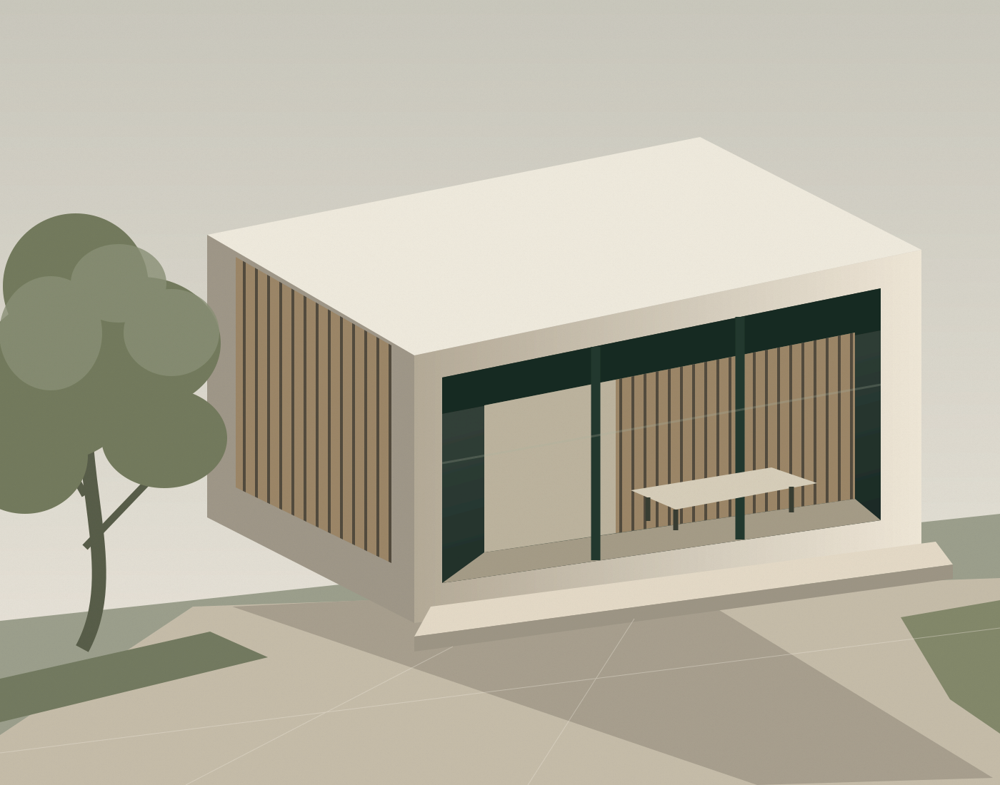

A wider perspective.
A more thoughtful approach.
Based in Auckland and serving clients globally, GOONZ brings development project consultancy, cost management, interior design and integration into one conversation.

See the connections.
Make considered choices.
A design choice can change a budget. A development priority can shape a floor plan. The strongest starting point is an understanding of how these decisions connect.
GOONZ supports private investors and property owners through that wider lens, bringing together the practical and creative considerations that influence the outcome.
Clarity before complexity.
Start with clear objectives and an understanding of the choices ahead.
Design with purpose.
Consider how a space works, what it needs to achieve and how it feels to use.
The whole project in view.
Keep the brief, budget and design intent connected as the project evolves.
Let’s give your project
a clear direction.
Tell us what you have in mind.